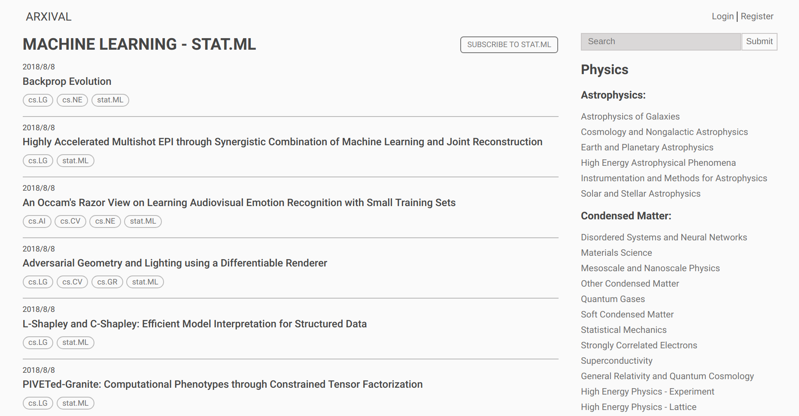
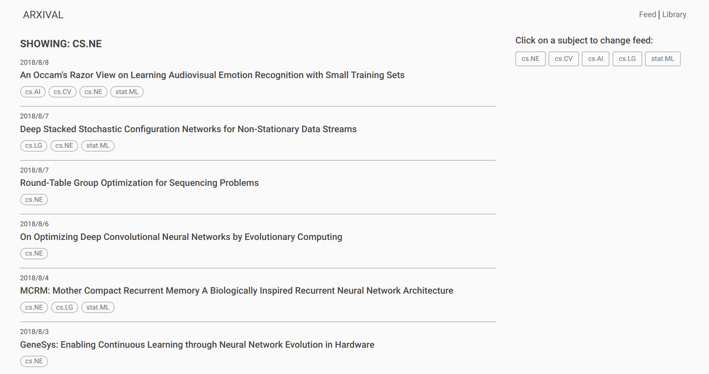

Arxival.org
A 'featurized' arxiv.org to make keeping up with research papers simpler and more organized.
Why I made this
As I wanted to expose myself to the research side of computer science and specifically, machine learning, I decided to start using arxiv.org. I quickly found it difficult to navigate the site and keep track of papers. From that frustration arxival.org was born.
Features
- Easily navigate through arxiv's many subjects.
- Save the subject feeds that are important to you to view in your dashboard.
- Save the papers you find interesting in a personal library.
- Search through papers with all the filtering power of the arxiv API
What is it built with
NodeJS, ExpressJS, Pug, JQuery, CSS. View it on Github
What does it look like
Subject Page:
User Page:
